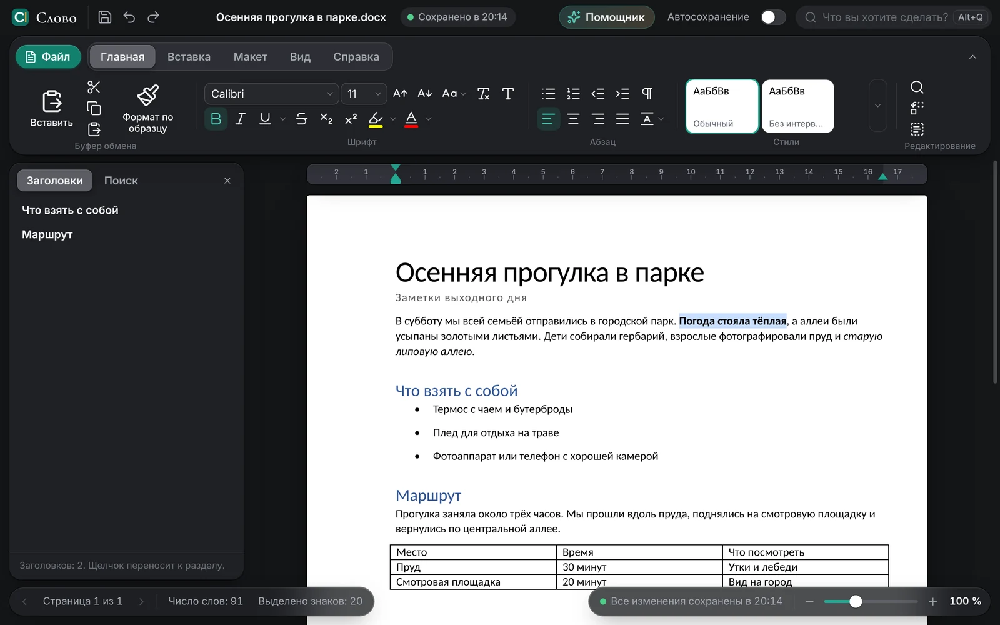
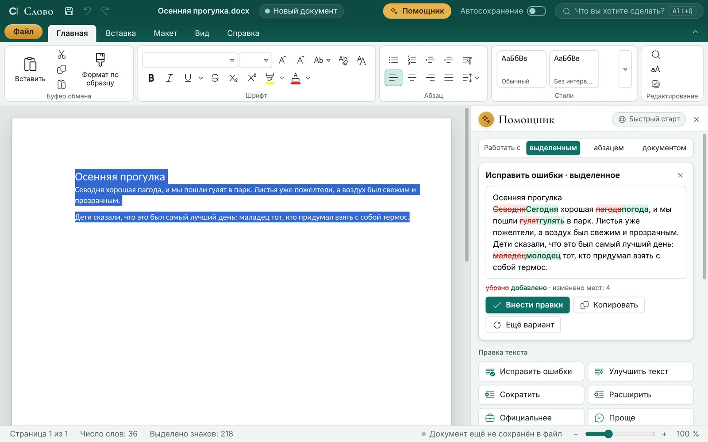
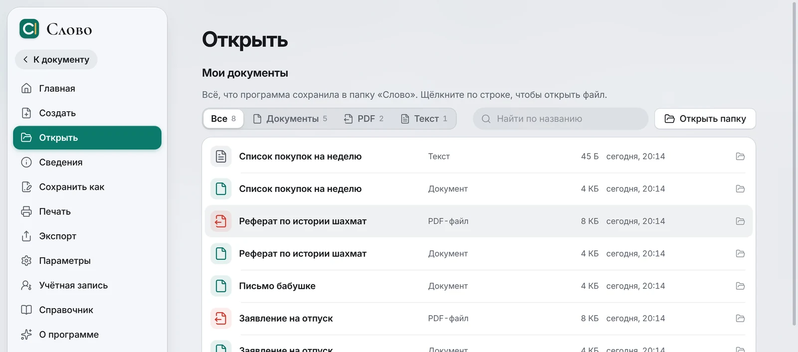
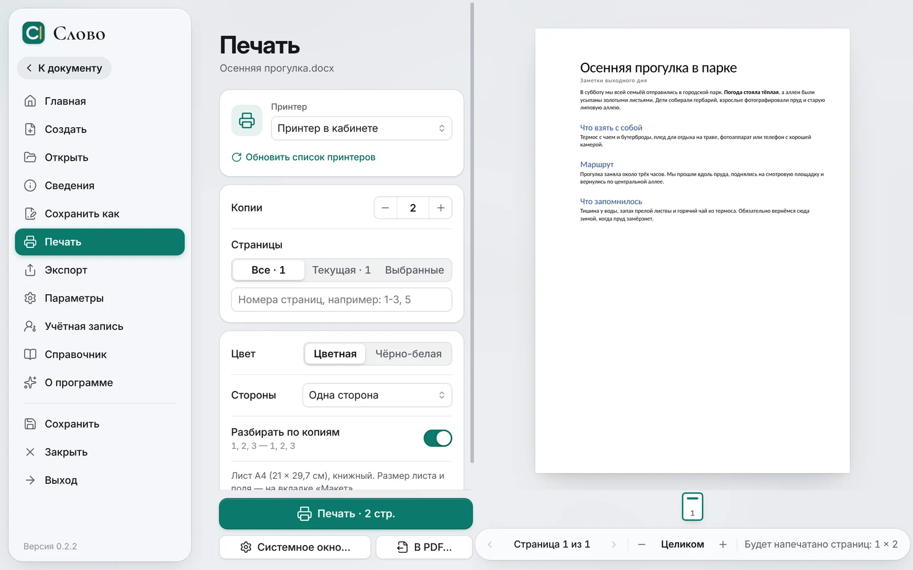
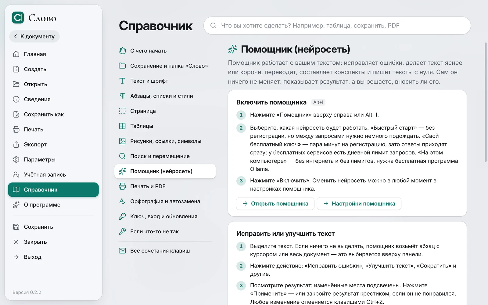

Что умеет программа
Всё, что нужно для обычной работы с текстом — от заявления до реферата. Снимки ниже сделаны с настоящей программы.
Документы, как вы привыкли
Шрифты, абзацы, списки, таблицы, рисунки, стили заголовков. Страница на экране выглядит так же, как на бумаге.
- Открывает и сохраняет файлы .docx — их можно отправить кому угодно
- Привычные сочетания клавиш работают и в русской раскладке
- Лента и панели из матового стекла парят над листом; светлая и тёмная тема
- Линейка над листом: отступы и красная строка — мышью; режим «Фокус» без лишнего на экране

Помощник правит текст вместе с вами
Выделите текст и выберите действие: исправить ошибки, улучшить, сократить, перевести, составить конспект. Помощник покажет, что именно он изменил, а вы решите, вносить ли правки.
- Напишет письмо, заявление или сочинение по вашему описанию
- Составит реферат на заданную тему с планом и разделами
- Ответит на вопрос по вашему документу
Без регистрации помощник работает через несколько открытых бесплатных сервисов и сам берёт тот, что сейчас отвечает: обычно ответ приходит за пару секунд. У каждого бесплатного сервиса есть лимит запросов. Без интернета и лимитов работает нейросеть на вашем компьютере — её можно выбрать в настройках.

Документы не теряются
Нажмите Ctrl+S — и документ сам ляжет в папку «Слово». Место выбирать не нужно, а найти файл потом легко: документы, PDF и текст разложены по своим папкам.
- Название файла берётся из первой строки, переименовать можно одним щелчком
- Раз в 15 секунд программа делает копию на случай сбоя
- Перед заменой файла прежняя версия сохраняется про запас

Печать и PDF — как на экране
Выберите принтер, число копий и страницы — и сразу увидите лист таким, каким он выйдет из принтера. PDF создаётся одной кнопкой: текст в нём выделяется и ищется.

Понятно с первого запуска
Внутри программы — справочник: что можно сделать и как, по шагам и простыми словами. Кнопка «Показать» обводит нужную кнопку прямо на экране.

Как начать
Три шага. Писать владельцу программы не нужно — заявка на ключ отправляется из самой программы.
-
Скачайте и установите
Запустите скачанный файл и нажмите «Установить». Это занимает меньше минуты, права администратора не нужны. Ярлык «Слово» появится на рабочем столе и в меню «Пуск».
-
Запросите ключ
При первом запуске напишите своё имя и фамилию и нажмите «Запросить ключ». Заявка уйдёт владельцу в зашифрованном виде.
-
Дождитесь ответа
Когда владелец одобрит заявку, программа откроется сама. Окно можно закрыть и зайти позже — заявка сохранится.
Если Windows показывает предупреждение. У установщика пока нет платной цифровой подписи, поэтому Windows может написать «Система Windows защитила ваш компьютер» — так она предупреждает о программах неизвестного ей издателя. Чтобы продолжить, нажмите «Подробнее», затем «Выполнить в любом случае». Убедиться, что файл не подменён, можно по контрольной сумме — она указана в ответах ниже.
Вопросы и ответы
Это бесплатно?
Да. Программа бесплатная, рекламы в ней нет. Ключ нужен, чтобы ею пользовались те, кому её дал владелец.
Нужен ли интернет?
Для работы с документами — нет. Интернет нужен помощнику-нейросети, для проверки обновлений и один раз — чтобы получить ключ.
Что программа отправляет в интернет?
Помощнику — только тот текст, с которым вы сами попросили поработать, и только в момент запроса. В режиме «Быстрый старт» он уходит одному из открытых сервисов (OVHcloud, LLM7, Kilo или Pollinations), а если тот не ответил — следующему. При запросе ключа — ваше имя и номер версии программы, в зашифрованном виде. При проверке обновлений программа только скачивает сведения о новой версии.
Больше ничего: документы, их названия и сведения о компьютере никуда не уходят, рекламы и сбора статистики нет. Как и любой сайт, эти сервисы видят адрес вашего подключения к интернету.
Почему у помощника есть лимит?
Помощник работает через бесплатные нейросети, а каждая ограничивает число запросов. В режиме «Быстрый старт» программа сама переходит к другому сервису; если подождать просят все, она скажет, сколько ждать, и повторит запрос сама. Кнопка «Проверить связь» в настройках помощника покажет, какие сервисы доступны с вашего компьютера.
Без лимитов и без интернета работает нейросеть на вашем компьютере (бесплатная программа Ollama). Её можно выбрать в настройках помощника; для неё желательно 8 ГБ памяти или больше.
Откроются ли мои документы в других программах?
Да. Документы сохраняются в распространённом формате .docx, который понимают другие редакторы. Для отправки и печати программа создаёт PDF.
Как обновлять программу?
Никак: она сама проверяет, не вышла ли новая версия, скачивает её и ставит при закрытии. Документы и настройки при обновлении остаются на месте.
Как удалить программу?
В Windows откройте «Параметры», затем «Приложения» и «Установленные приложения», найдите «Слово» и выберите «Удалить». Ваши документы при этом остаются на месте.
Как проверить, что установщик настоящий?
У каждого файла есть контрольная сумма — «отпечаток». Если у скачанного файла она совпадает с указанной здесь, файл не подменён и не повреждён.
Откройте PowerShell в папке с файлом и выполните: Get-FileHash .\Slovo-0.2.4-Setup.exe
Должно получиться: сумма появится здесь после загрузки сведений о версии
На каких компьютерах работает?
На 64-разрядной Windows 10 или 11. На Windows 7 и 8 программа не запустится.